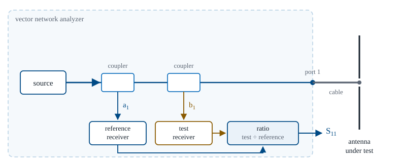
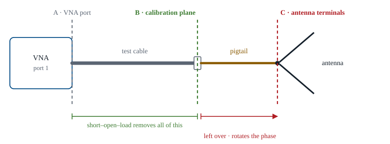

L13 - Measurement Lab 1 — Impedance and S-parameters#
Measurement Lab 1 — Impedance and S-parameters
This is the lesson where that prediction meets a real piece of wire and a real instrument.
Lesson 13 · Antennas, Phased Arrays, and Radar Systems · Dr. Neil Rogers
Learning Objectives
- I can explain what a vector network analyzer measures — the ratio of the returning wave to the outgoing wave — and translate that ratio into reflection coefficient, impedance, return loss, and VSWR.
- I can perform a short-open-load calibration, name the three error terms it removes, and explain why the reference plane decides what the numbers mean.
- I can measure an antenna's reflection versus frequency, read its resonances and its −10 dB impedance bandwidth, and find the same information on the Smith chart.
- I can explain what the environment — hands, benches, walls — does to a measured antenna, and separate mismatch from radiation in what the analyzer reports.
Lesson 12 set up measurement from the radiated side: ranges, far-field distance, pattern cuts. Today you work the other terminal. The measurement is one port, one cable, and one complex number per frequency, and that number carries everything you have been predicting on paper since Lesson 4. Lesson 7 told you a half-wave dipole should sit near \(73 + j42.5\ \Omega\) and resonate slightly short of \(\lambda/2\). This is the lesson where that prediction meets a real piece of wire and a real instrument.
Part 1: What the analyzer actually measures
A vector network analyzer (VNA) is a swept source, two receivers, and directional couplers that separate the outgoing wave from the returning one. At each frequency it launches a wave down the test cable, and the couplers split off two small samples: one of the wave going out, one of the wave coming back. Call them \(a_1\) and \(b_1\). Both receivers record magnitude and phase — that is the “vector” in the name.

The one definition
The instrument then reports the ratio:
Because both samples come from the same source, anything the source does wrong — drift, ripple, or amplifier gain variation — divides out of the ratio. That is why a pocket NanoVNA and a bench instrument costing a thousand times more agree on a well-calibrated one-port measurement to within a fraction of a dB.
For a one-port device, and an antenna is a one-port device, that ratio is the reflection coefficient at the reference plane:
The VNA measures one complex number per frequency: what came back, divided by what went out. Return loss, VSWR, impedance, and the Smith chart are all re-dresses of that single number. Nothing else is being measured.
Impedance from the ratio
Invert the bilinear relation and you have the impedance the antenna presents:
Four names for the same number
These are four ways of saying the same thing, and all of them appear on instrument menus:
Quantity |
From \(\Gamma\) |
At \(\vert\Gamma\vert = 0.316\) |
|---|---|---|
\(\vert S_{11}\vert\) in dB |
\(20\log_{10}\vert\Gamma\vert\) |
\(-10.0\) dB |
Return loss |
\(-20\log_{10}\vert\Gamma\vert\) |
\(10.0\) dB |
VSWR |
\((1 + \vert\Gamma\vert)/(1 - \vert\Gamma\vert)\) |
\(1.92\) |
Fraction of power reflected |
\(\vert\Gamma\vert^2\) |
\(10\%\) |
The last row is the one to keep in your head. The −10 dB convention from Lesson 4 is not an arbitrary convention: it is the frequency band over which at least 90% of the power you deliver actually gets into the antenna.
Worked example — from a marker readout to an impedance
Worked example — from a marker readout to an impedance
Your marker at 915 MHz reads \(S_{11} = 0.28\ \angle-140^\circ\). What is the antenna doing?
First, rectangular form:
Magnitude quantities come straight off \(\vert\Gamma\vert = 0.28\):
Worked example — from a marker readout to an impedance (cont.)
Worked example — from a marker readout to an impedance (cont.)
Then the impedance:
Read the physics, not the arithmetic. It passes the −10 dB spec. The resistance is low — 31 Ω instead of the ~70 Ω you expect from a resonant dipole — and the reactance is negative, meaning capacitive, meaning the element is electrically short at this frequency. Resonance is somewhere above 915 MHz, and the antenna wants to be trimmed longer, not shorter, to bring it down.
The same conversion, on the textbook numbers
The same conversion is worth running on the textbook numbers. A perfect half-wave dipole at \(73 + j42.5\ \Omega\) gives \(\vert\Gamma\vert = 0.371\), or \(-8.6\) dB, VSWR \(2.18\) — it fails the −10 dB test. Shorten it to resonance, where it settles near \(70\ \Omega\) real, and you get \(-15.6\) dB and VSWR \(1.40\). That \(42.5\ \Omega\) of reactance is the entire difference between a marginal antenna and a good one, and it is why nobody builds a dipole exactly \(\lambda/2\) long.
Part 2: Calibration — teaching the instrument where zero is
Connect an antenna to an uncalibrated VNA and the trace you see is not the antenna. It is the antenna seen through the instrument’s own imperfections. Three of them dominate a one-port measurement:
Directivity. The coupler that is supposed to sample only the returning wave leaks a little of the outgoing wave into the same receiver. The VNA therefore sees a reflection even from a perfect load.
Source match. The test port is not exactly \(50\ \Omega\). Energy the antenna sends back gets partly re-reflected at the port and sent to the antenna again, where it reflects again.
Tracking. The reference path and the test path have different gain and different phase, and both vary with frequency.
Short–open–load
Three unknown error terms means you need three known standards. That is all a short-open-load (SOL) calibration is:
Standard |
Known \(\Gamma\) |
What it pins down |
|---|---|---|
Short |
\(-1\) |
one phase extreme |
Open |
\(+1\) |
the other phase extreme |
Load (\(50\ \Omega\)) |
\(0\) |
the leakage floor |
You measure all three, the instrument solves three equations at every point in the sweep, and from then on it subtracts its own error before showing you anything. (Two-port work adds a through standard — hence SOLT — but a one-port antenna measurement needs only the three.)
Calibration does not make the instrument more accurate. It teaches the instrument where zero is — and zero is wherever you attached the standards.
The reference plane, and the pigtail problem
That statement has a direct consequence. The plane where you attached the standards becomes the plane where \(S_{11} = 0\) means “perfectly matched.” Everything on the far side of it is part of your device under test, whether you meant it to be or not.

How far does a pigtail rotate the trace?
Calibrate at the end of the test cable (plane B) and hang a short pigtail on before the antenna, and that pigtail is now part of the antenna as far as the instrument is concerned. Loss in a short pigtail is negligible, so \(\vert S_{11}\vert\) barely changes and the dB plot still looks correct, which is why the error is easy to miss. The phase changes substantially, because the wave traverses the extra length twice, out and back:
10 cm of RG-58 at 915 MHz
Take 10 cm of RG-58 (\(v_f = 0.66\)) at 915 MHz. Then \(\lambda_g = 21.6\ \text{cm}\), the pigtail is \(0.46\lambda_g\) long, and \(\Delta\phi = 333^\circ\) — nearly a full rotation of the Smith chart. The impedance you read off is not the antenna’s impedance in any useful sense. At 990 MHz the same pigtail is exactly a half guided wavelength and the impedance repeats, so it is the one frequency where the un-de-embedded reading is still correct.
Two fixes for the reference plane
Two fixes, in order of preference: calibrate at the antenna connector so plane B and plane C coincide, or use the instrument’s port extension (sometimes “electrical delay”) to rotate the reference plane forward by the known length. Port extension is a phase-only correction — it cannot undo loss and it cannot undo an actual mismatch inside an adapter.
Verify before you trust it
Note
Always verify a calibration before you trust it. Reconnect the load standard and look: \(\vert S_{11}\vert\) should sit below \(-30\) dB across the whole sweep. If it does not, something moved, a connector is loose, or you swapped cables after calibrating. Re-do it. An unverified cal is an unmeasured antenna.
Part 3: Reading the sweep, three ways
Plot \(\vert S_{11}\vert\) in dB against frequency and the antenna’s behavior is immediately visible:
A dip marks a resonance — a frequency where the antenna accepts power.
The depth of the dip says how well matched it is at that frequency. It says nothing about how well it radiates.
The width of the region below −10 dB is the impedance bandwidth. Report it two ways: absolute (MHz) and fractional (percent of center frequency). Fractional bandwidth is what lets you compare a 900 MHz antenna to a 2.4 GHz one.
Worked example — bandwidth off a trace
Worked example — bandwidth off a trace
A trace bottoms out at \(-19\) dB and crosses the −10 dB line at 878 MHz and 922 MHz.
A thin wire dipole lands in the 3–10% range, so this is entirely believable. If you measure 1%, suspect the setup before you suspect the antenna — a resonant length of feed cable can manufacture a narrow dip that has nothing to do with the element.
The same event on the Smith chart
You met the Smith chart in ECE 343 as a graphical impedance calculator. Today you only need to read one. It is the complex \(\Gamma\) plane with a normalized-impedance grid drawn on top: the center is \(50\ \Omega\), the left edge is a short, the right edge is an open, the upper half is inductive and the lower half is capacitive. Four reading skills cover almost everything you will see this semester:
Four reading skills
The locus crosses the real axis → the reactance is zero → resonance. Left of center means \(R < 50\ \Omega\), right of center means \(R > 50\ \Omega\).
The locus is inside the circle of radius 0.316 → \(\vert S_{11}\vert < -10\) dB. That circle is the specification drawn on the chart.
A loop in the trace means two resonances close together — often the element plus something in the feed.
The whole trace rotating means your reference plane moved, not your antenna. Added transmission line produces rotation and nothing else.
S11 and the Smith chart
The widget below shows one physical resonance in both languages at once. Drag across either plot: the marker tracks the same frequency on both. Watch three things. First, the dip in dB, the real-axis crossing on the chart, and the VSWR minimum are the same event seen three ways. Second, slide \(R\) at resonance away from \(50\ \Omega\) and the dip gets shallower while the resonant frequency does not move — mismatch and resonance are independent. Third, raise \(Q\) and the bandwidth pinches shut, which is exactly why fat conductors are wideband and thin ones are not.
Part 4: What the VNA will not tell you
One limitation governs everything in this lab. Solder a \(50\ \Omega\) resistor across the connector and measure it. \(\Gamma = 0\), \(\vert S_{11}\vert\) plunges to the noise floor, VSWR reads \(1.00\), and the Smith chart marker sits precisely at the center. It is a perfect match at every frequency in the sweep. It also radiates nothing — all of your power turns into heat. \(S_{11}\) measures mismatch only. It cannot distinguish power that left as radiation from power that died as loss in a resistive conductor, a lossy dielectric, or damp packaging material. Radiation efficiency needs a second, independent measurement — a gain comparison against a standard antenna (Lesson 14) or a Wheeler cap. You cannot get it from one port.
This cuts both ways on the bench. A deep, wide dip is necessary for a good antenna, not sufficient. Conversely, an antenna with a mediocre \(-8\) dB match may still be the better radiator.
The environment is part of your antenna
Lesson 5 defined the reactive near field as the region where energy is stored rather than radiated. Anything you put in that region becomes part of the antenna, and the VNA will tell you so immediately:
Perturbation |
What you will see |
Why |
|---|---|---|
Hand near the element |
\(f_0\) shifts down, dip gets shallower |
body tissue adds capacitance and loss |
Antenna flat on the bench |
\(f_0\) shifts, a loop may appear |
the metal bench acts as a partial ground plane |
Antenna near a wall or monitor |
small wiggles around the dip |
re-radiated energy returns to the port |
Not instrument error — real physics
None of this is instrument error. It is a real change in the antenna’s input impedance, and the same physics reappears in Module 3 as mutual impedance between array elements. When you put your hand near a dipole today, you are running a one-element preview of what neighbors in an array do to each other.
Part 5: Equipment and procedure
A VNA — bench instrument or NanoVNA, either is fine. The steps below are written to work on both.
A calibration kit for your connector type: short, open, and \(50\ \Omega\) load.
One test cable, plus a torque wrench if your bench has one.
A supplied dipole or monopole with a known nominal resonance.
A non-metallic stand or a length of foam to hold the antenna clear of everything.
Set the sweep
Start and stop frequencies bracketing the expected resonance by roughly \(\pm 30\%\), at least 401 points. Note the settings — changing them after calibration invalidates the cal on some instruments.
Calibrate
Run short, open, and load at the far end of the test cable, not at the instrument’s front panel. Keep the cable still afterwards; flexing it changes its phase.
Verify
Reconnect the load standard and confirm \(\vert S_{11}\vert < -30\) dB across the band. Screenshot it — this is evidence your data means something. If it fails, re-calibrate before going on.
Measure the antenna
Connect it and hold it clear of the bench, your hands, and your body. Record:
the resonant frequency (the dip, and confirm it as the real-axis crossing on the chart),
\(Z\) at resonance, from the impedance readout or marker,
the two −10 dB crossing frequencies.
Compare to prediction
Is the measured resonance above or below the frequency a \(\lambda/2\) calculation gives? Which way would you trim the element? Write the answer down before you move on.
Perturb, one variable at a time
Repeat the resonance / impedance / bandwidth reading for three configurations: held clear in free space, with a hand 2–3 cm from the element, and lying flat on the bench. Record all three.
Two failure modes account for most bad data
Note
Two failure modes account for most bad lab data. The first is calibrating with one cable and measuring with another. The second is gripping the coax right at the feed point while you read the screen — you have then perturbed the very measurement you are recording. Set the antenna down on the foam stand and take your hands off it.
Part 6: Deliverables
One page, submitted at the start of Lesson 15:
An annotated \(\vert S_{11}\vert\) plot. Resonance marked, both −10 dB crossings marked, axes labeled with units.
A results table: \(f_0\), \(Z\) at resonance, −10 dB bandwidth in MHz and in percent, for all three perturbation configurations.
A Smith-chart screenshot with the resonance point marked, and one sentence identifying it as the real-axis crossing.
A paragraph on the perturbation results. What moved, in which direction, by how much, and why. Connect at least one observation to the near-field argument in Part 4.
A plot with no markers and no units is a screenshot rather than a measurement, and the paragraph carries the largest share of the grade.
Summary — the ratio
Symbol / idea |
Meaning |
What to remember |
|---|---|---|
\(a_1\), \(b_1\) |
outgoing and returning wave samples |
the VNA ratios them; source drift cancels |
\(S_{11} = b_1/a_1\) |
one-port scattering parameter |
equals \(\Gamma\) at the reference plane |
\(Z_L = Z_0(1+\Gamma)/(1-\Gamma)\) |
impedance from reflection |
sign of \(X\) tells you short (−) or long (+) |
Summary — the match and the calibration
Symbol / idea |
Meaning |
What to remember |
|---|---|---|
\(\vert S_{11}\vert \le -10\) dB |
the match spec |
90% of delivered power gets in; \(\vert\Gamma\vert \le 0.316\); VSWR \(\le 1.92\) |
Directivity, source match, tracking |
the three one-port error terms |
three unknowns, hence three SOL standards |
Reference plane |
where the standards were attached |
line length past it = pure rotation on the chart |
Summary — bandwidth and the environment
Symbol / idea |
Meaning |
What to remember |
|---|---|---|
Impedance bandwidth |
width of the region below −10 dB |
quote it as a percentage; 3–10% for a thin dipole |
\(50\ \Omega\) resistor |
perfect \(S_{11}\), zero radiation |
\(S_{11}\) sees mismatch only, never efficiency |
Practice
Where this is going
Lesson 14 measures the half of the problem this lab cannot reach. A VNA tells you power went in; only a pattern range tells you it came back out, and in which direction. Together the two labs give you match, pattern, and gain — the complete characterization of a single element, and the efficiency question Part 4 left open.
Further out, the skills compound. Module 3 builds arrays from these elements, and every element in an array sees its neighbors as a mutual impedance — precisely the \(S_{11}\) shift you produced with your hand. And the midterm project due at Lesson 20 asks you to design, build, tune, and defend an antenna. Tuning is this lab: measure, read the sign of the reactance, trim, measure again. Calibration and Smith-chart fluency are the rate-limiting skills on that project. Practice both in this lab, where the cost of a mistake is an afternoon rather than a week.